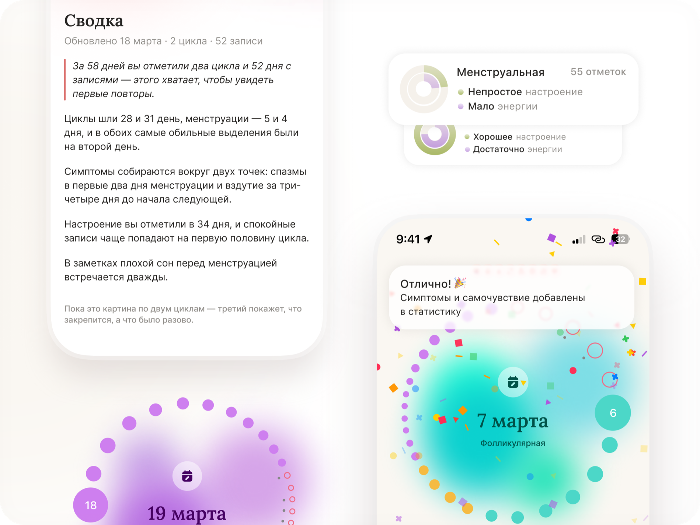

Слева — картинка, которая стояла на главной. Справа — то, что стоит там сейчас. Снимки одного размера и в одних позициях: так и было задумано, поэтому на глаз они почти не различаются. Разница в том, что правый работает.
Файл images/lunel-placeholder_ru.png. Снят до переделки приложения
1–6 октября 2026.

Те же экраны, собранные HTML-компонентами приложения. Потяните мышью по любому из колец.
Что проверить за десять секунд: потяните по фиолетовому кольцу справа — дата, фаза и фон поедут за мышью, слева ничего не произойдёт. Дальше сравните три строки: «Сводка» → «Настроение», «55 отметок» → «11 отметок», «Отлично! Симптомы и самочувствие…» → «Отличная работа! Добавлено в вашу статистику…». Это нынешние строки приложения: на картинке слева их версия уже не существует.